Raido
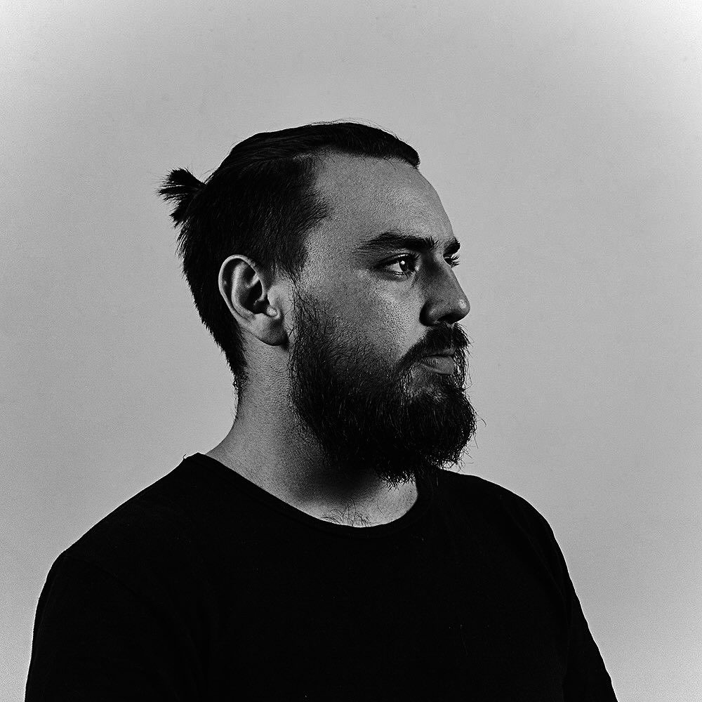
Costa Rican producer and DJ based in Albany, New York. Resident at Relay, OHM's techno nights in Troy. Dub/deep techno, percussion-heavy techno, hard drum and Latintek.
Giancarlo Renzi Yglesias
San José, Costa Rica / Albany and Troy, NY
- Sound
- Eco-Tek: natural field recordings over raw, fast club rhythms
- 120-135 BPM
- Dub/Deep Techno set
- 130-150 BPM
- Percussion-Heavy Techno set
- 130-160 BPM
- Hard Drum & Latintek set
- Resident
- Relay at OHM, Troy, NY
- Labels
- Body Method, Pollen Music, TMPL, ETA45MINS
- Latest
- Empire Plaza, on OHM's Regional Resonance (Nov 2026)
Bio
- Short and long versions
- Free to reprint
Raido is the project of Giancarlo Renzi, a Costa Rican producer, DJ and designer based in Albany, New York, where he is art director of the nonprofit OHM and a resident DJ at its Relay techno nights in Troy. His current sound, Eco-Tek, pairs natural field recordings from Costa Rica with fast, percussion-led club rhythms, moving through techno, gqom, breaks and hard drum. As a DJ he plays three kinds of sets: dub/deep techno, percussion-heavy techno, and hard drum and Latintek. Recent releases are out on Body Method (Boston), Pollen Music (Lisbon), TMPL (Costa Rica) and ETA45MINS (Salt Lake City).
Raido is the music project of Giancarlo Renzi, a Costa Rican producer, DJ, mastering engineer and designer now based in Albany, New York. Renzi started as a drummer and moved into DJing and production around 2009, playing grime, drum and bass and dubstep in bars around San José. In 2012 he was part of Source, a local collective that brought bass music and a strong visual side to Costa Rican stages. He started the Raido project in 2013.
His early records leaned toward hip hop, downtempo and textured electronic beats. The first Raido EP, Meant to Be (2014, Top Cats and NWLA), featured Jesse Baez, and two albums followed in 2015, Aware Pt. 1 and Jera. That period brought shows at Festival NRMAL Costa Rica and the Festival Internacional de las Artes in San José, and at Festival Ceremonia and the Antes del Antes showcase in Mexico City. While living in Barcelona, he made Automatic//Manual, a series of six EPs built from modular loops and structured compositions.
Since 2024 his focus has been Eco-Tek, a sound built around natural field recordings such as rustling leaves and insect calls. The tracks are functional and driven by percussion, with isolated kicks and heavy drums, and they move between techno, gqom, breaks and hard drum. Eco-Tek [BMR-002] came out on Boston's Body Method in 2025 and includes Mountain Fires, a track with Durban gqom producer Emo Kid. Other recent releases include Devastation Sounds on Lisbon's Pollen Music, Dare to Chase on the Costa Rican collective TMPL, the Black Fire EP with Tydunn, and Empire Plaza on OHM's compilation Regional Resonance. For That's Hot, on the ETA45MINS compilation RavePro, he worked with only six tracks in the DAW, the limit every artist on the record shared.
Renzi holds a B.S. in Industrial Design from Universidad Veritas in Costa Rica and an M.S. in Product Design and Development from ELISAVA in Barcelona, and his music follows the same approach as his design work: direct, functional and industrial, with no extra ornament. He is co-founder and art director of OHM, a grassroots nonprofit for electronic music and digital arts in New York's Capital Region, and has led its brand since the first concepts: the wordmark, event key art and flyers, social campaigns, motion promos, merch and the spatial design of its 120-capacity venue in Troy, which opened in October 2026. Metroland Now featured OHM in its Nonprofit Spotlight that November. He is also a resident DJ at Relay, OHM's techno and breaks night, and plays three kinds of DJ sets: dub/deep techno, percussion-heavy techno, and hard drum and Latintek. Alongside the music, he designs all Raido artwork, builds real-time 3D audio visualizers for live techno events with C++, openFrameworks and GLSL, and keeps a design portfolio at designbyraido.com.
Sets
- Three DJ set types
- 120 to 160 BPM
- 120-135 BPM
- Dub/Deep TechnoDub techno, deep techno
- 130-150 BPM
- Percussion-Heavy TechnoTechno, Eco-Tek originals
- 130-160 BPM
- Hard Drum & LatintekGqom, baile funk, Latin club and dembow, breaks, hard drum, Eco-Tek originals
Includes Eco-Tek originals
Eco-Tek
- Field recordings
- Club rhythm
- 2024 to now
Eco-Tek is Renzi's name for a club sound built from natural field recordings. Leaves, insects and other sounds recorded in the Costa Rican mountains sit on top of raw, fast rhythms with isolated kicks and dense percussion. Eco-Tek tracks run through the Percussion-Heavy Techno and Hard Drum & Latintek sets.
The approach comes from industrial design. The music and the design work follow the same rules: direct, functional and brutalist, with no ornament that does not do a job.
Intro to Eco-Tek
Self-released / 22 Jan 2025| 01 | Tek-Girl | 4:15 |
| 02 | Eco-Tek | 3:52 |
| 03 | Vulcanowith Ovsicori | 3:45 |
The first sketch of the sound: mountain, jungle and club influences.
Eco-Tek [BMR-002]
Body Method, Boston / 4 Apr 2025| 01 | CAPS LOCK | 4:20 |
| 02 | Nautica | 4:44 |
| 03 | Pain Relief | 4:20 |
| 04 | Mountain Fireswith Emo Kid (Durban) | 4:24 |
Second release on Body Method. Latin bass, gqom, breaks and techno.
Releases
- Selected releases
- 2014 to 2026
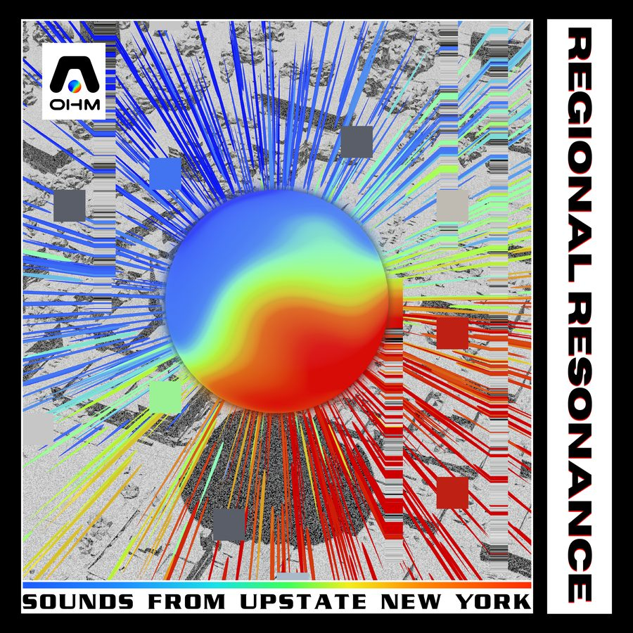
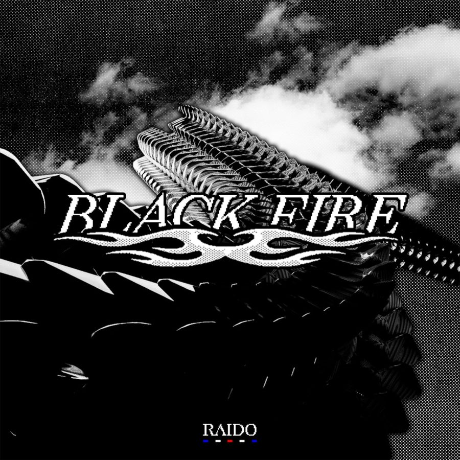
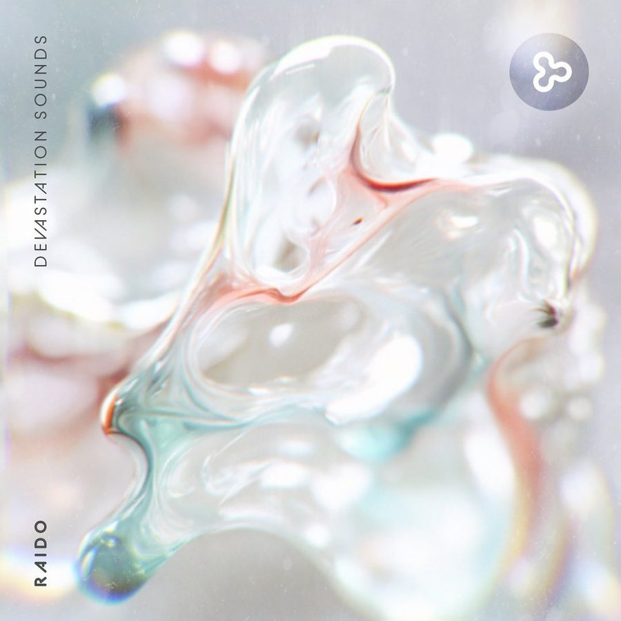
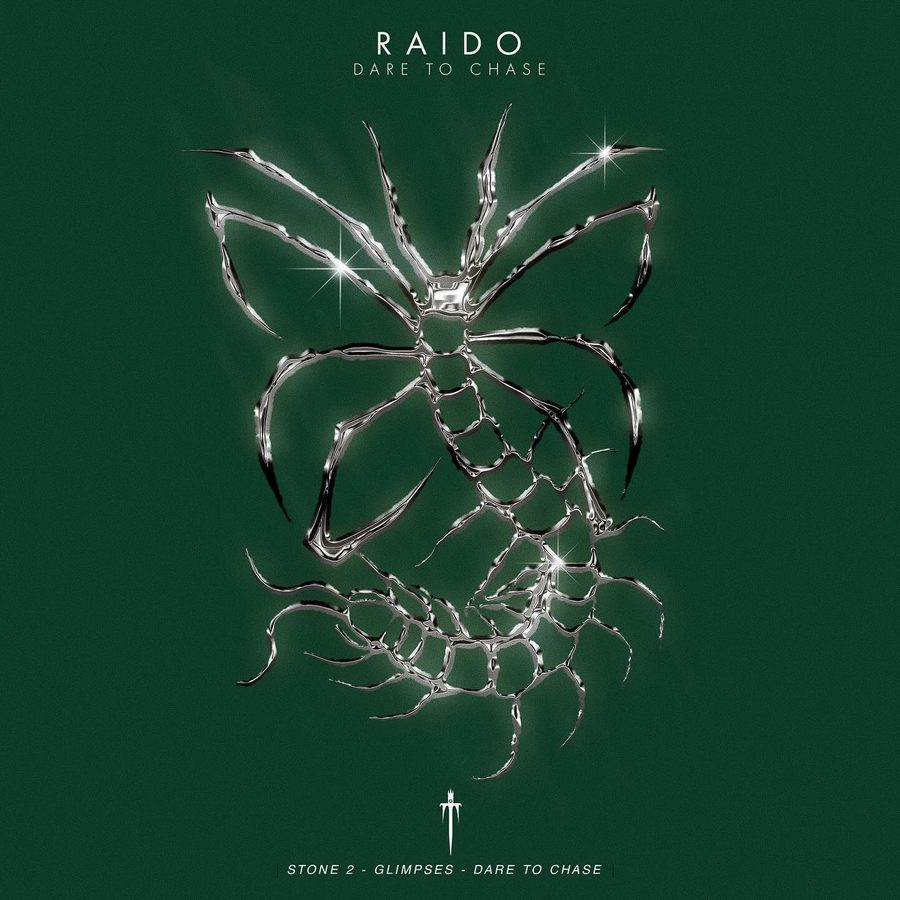
| Year | Release | Label |
|---|---|---|
| 2026 | Empire PlazaOn Regional Resonance: Sounds from Upstate New York (November) | OHM |
| 2026 | LVRSingle | Self-released |
| 2026 | CULO // SHAKER | Self-released |
| 2026 | Black Fire EPBlack Fire with Tydunn, Sol Dos | Self-released |
| 2025 | That's HotOn RavePro [ETA 20], built with only six tracks in the DAW | ETA45MINS, Salt Lake City |
| 2025 | Emo Kid, Speed Limit (Eco-Tek Remix) | Self-released |
| 2025 | Eco-Tek [BMR-002]Includes Mountain Fires with Emo Kid | Body Method, Boston |
| 2025 | Intro to Eco-TekIncludes Vulcano with Ovsicori | Self-released |
| 2024 | Devastation Sounds [P003]Gqomtico, Druchii, Edge, Jungle Wars | Pollen Music, Lisbon |
| 2024 | Dare to Chase EPStone 2, Glimpses, Dare to Chase | TMPL, Costa Rica |
| 2022 | Leaving the Tropics | Self-released |
| 2022 | Coastal Erosion EP | Self-released |
| 2017 | Automatic // ManualSix EPs made in Barcelona | Self-released |
| 2015 | JeraLP | |
| 2015 | Aware Pt. 1LP with Jesse Baez, Felipe Pérez (424) and Lilac | |
| 2014 | Meant to Be EPTitle track with Jesse Baez | Top Cats and NWLA [TC 001] |
Mixes
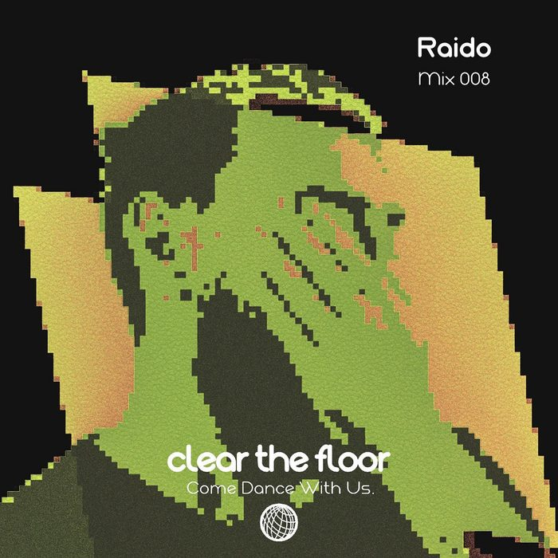
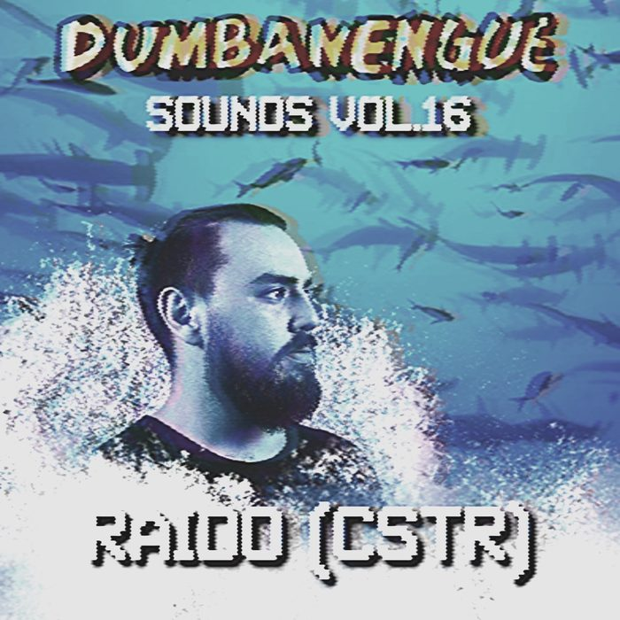
Live
- Selected shows
- 3 cities
- 2014 to 2026
Albany and Troy, NY
- NowResident DJ, RelayOHM's techno and breaks night, Troy, since October 2026
- 2026Relay #001Halloween at OHM, Troy, with Zaza and PS11
- 2026Sobolik (NYC), OHM event #007Mt. Ida, Troy, with DRC
- 2026Craft Beats518 Craft, Troy, with DRC
- 2025OHM launch fundraiserOutdoors at Darkhorse, Albany
- 2025Minimal MondayThe Skyway, Albany, with The Skyway Collective
San José, Costa Rica
- 2024CRUDO by TMPLLe Chandelier, with Daria Kolosova (Ukraine)
- 2023ClorofilaEspacio Exó, DJ set
- 2019Semana UUniversidad de Costa Rica
- 2015Festival NRMAL Costa RicaLineup with The Sonics, Helado Negro, Buscabulla and Gepe
- 2014Festival Internacional de las ArtesSan José
Mexico City
- 2018Nueva Rara LatinoaméricaNWLA, Laguna
- 2015Festival CeremoniaMexico City
- 2014Antes del AntesLaunch party by NWLA, Remezcla and Finesse Records
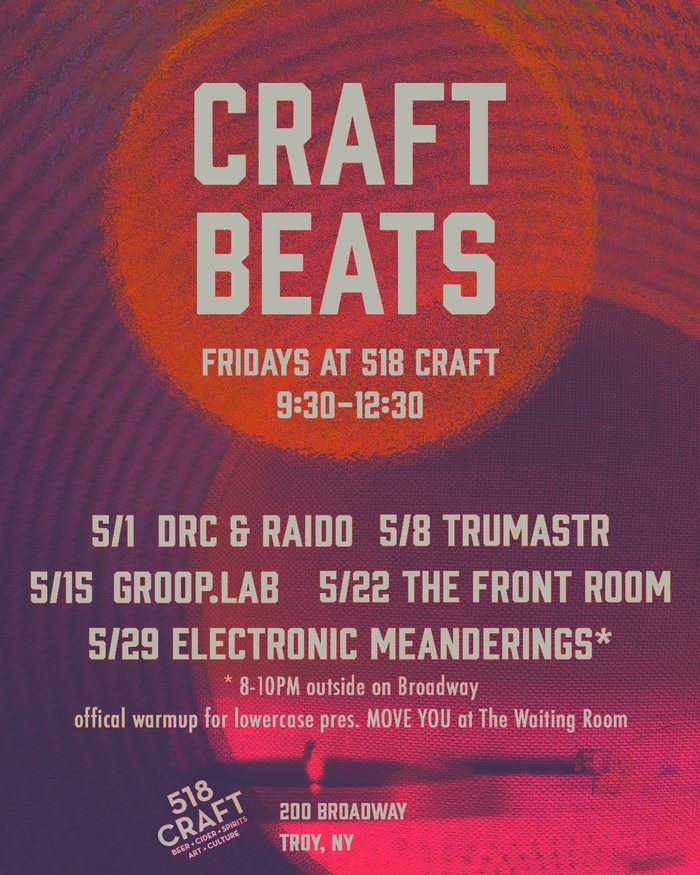
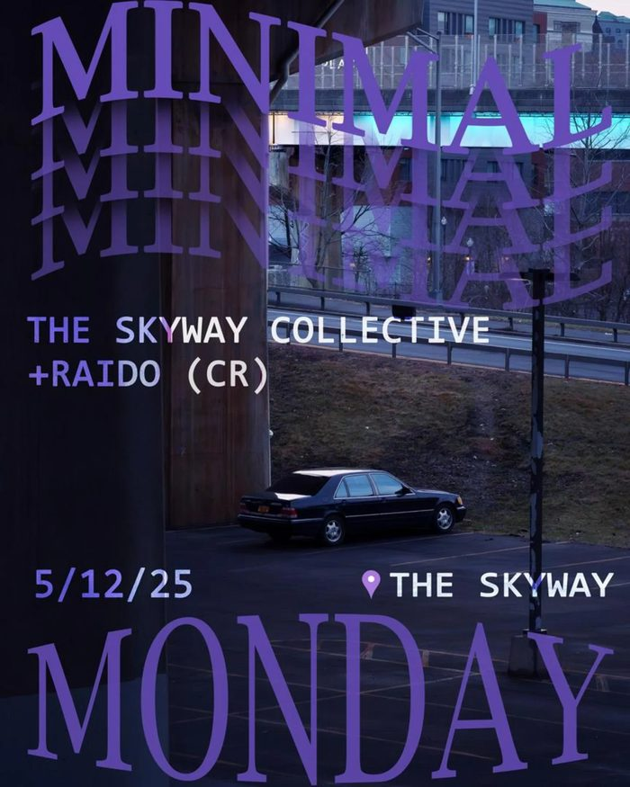
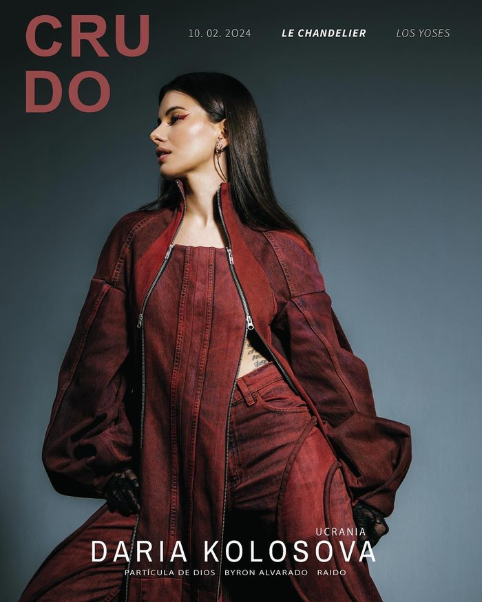
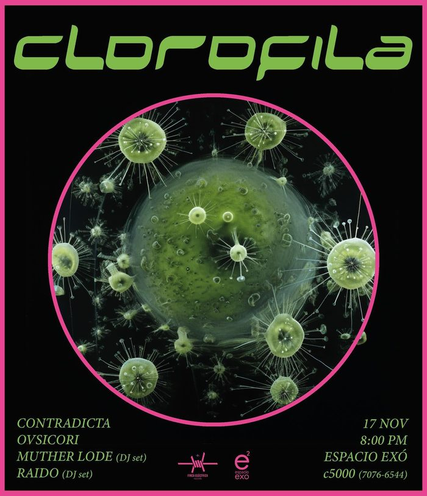
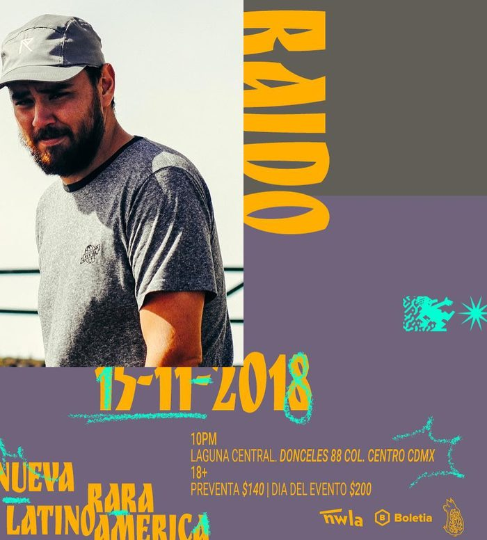
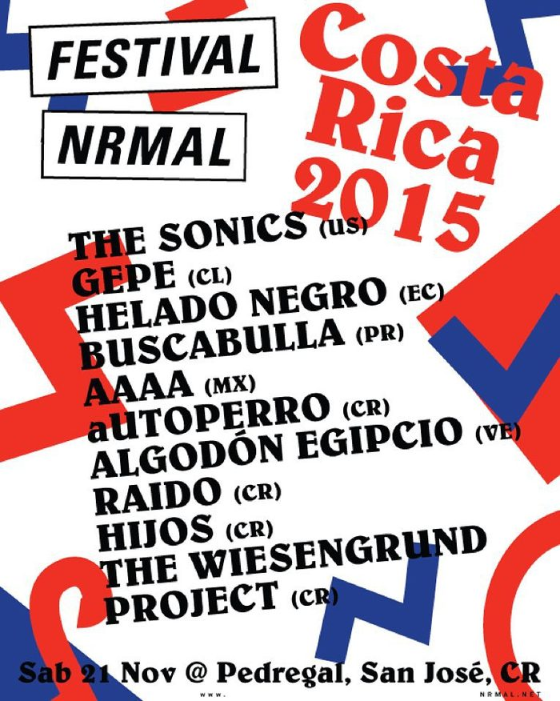
OHM
- Co-founder and art director
- Resident DJ at Relay
- 2025 to now
- Role
- Art direction, brand identity, event key art, motion, merch, venue design
- Reach
- 65,000+ reach and 2,000+ interactions on a new Instagram account
- Venue
- 120-capacity community arts venue in Troy, opened October 2026
- Press
- Metroland Now, Nonprofit Spotlight, November 2026
- Tools
- Blender, After Effects, and R-SIGNAL, an audio-reactive tool he built in openFrameworks
Renzi is co-founder and art director of OHM. He leads all of its visual work: the brand identity, flyers and key art for every event, social campaigns, 3D motion promos, merch and a print brochure. He also designed the space for OHM's 120-capacity venue in Troy, which opened in October 2026, and plays as a resident DJ at Relay, its techno and breaks night.
OHM is a grassroots nonprofit for electronic music and digital arts in New York's Capital Region. Beyond its club nights, it runs a documentary screening series on electronic music history at Alias Coffee in Albany, launched with a free outdoor event that showcased local DJs, producers, VJs and lighting artists, and holds community days like the Earth to OHM park cleanup.
Outside OHM, he designs every Raido cover and flyer and builds real-time 3D audio visualizers for live techno events with C++, openFrameworks and GLSL. Brand, product and 3D work for other clients is on the design portfolio.
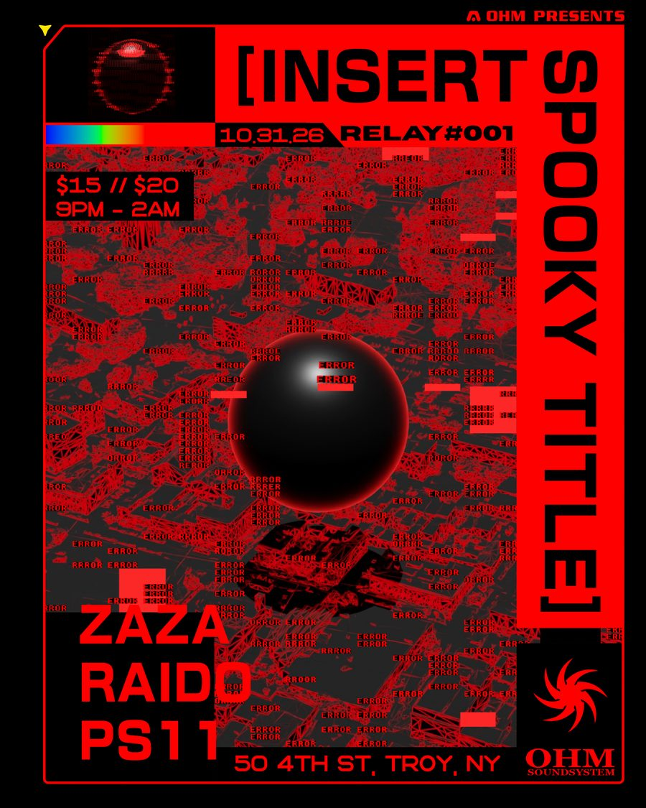
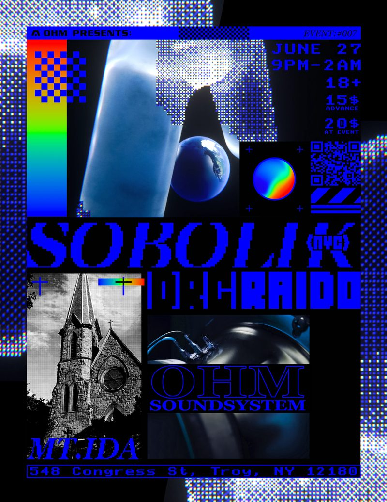
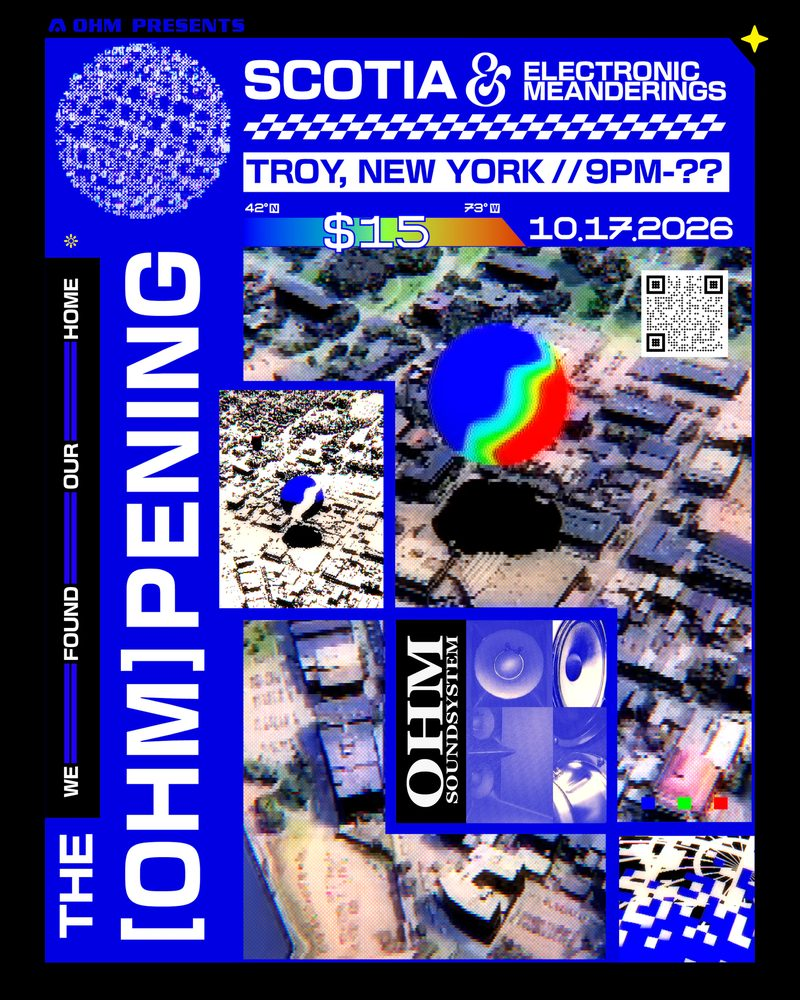
Press
- Feature and archive
- 2014 to 2026
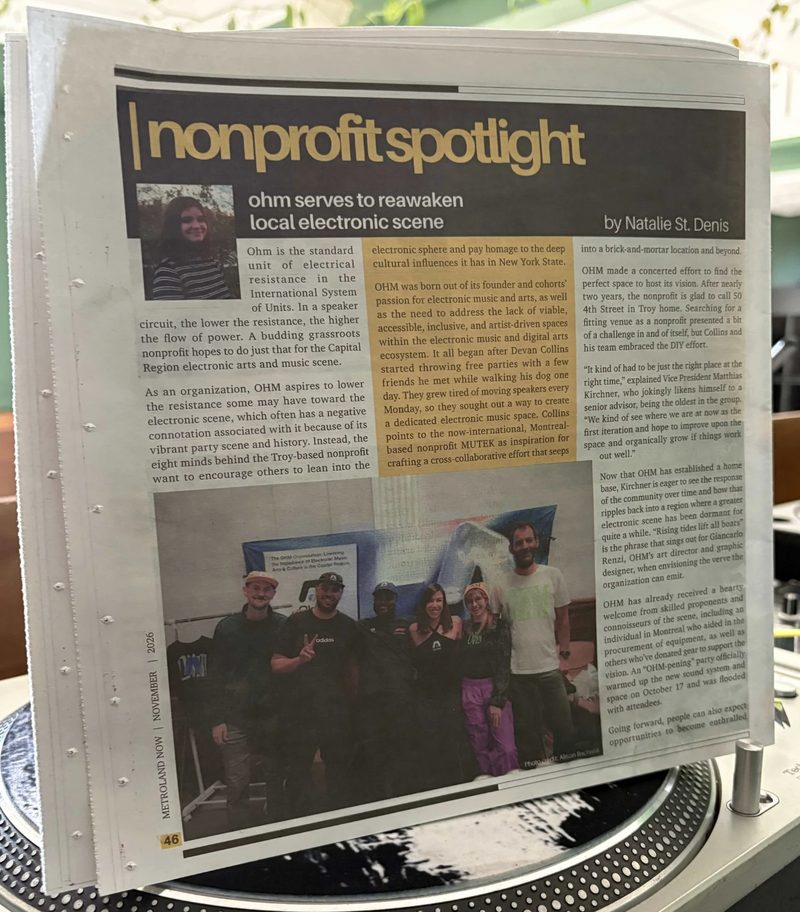
Nonprofit Spotlight: OHM serves to reawaken local electronic scene
By Natalie St. Denis / photos by Alison Bachorik
A two-page profile of OHM and its new home at 50 4th Street in Troy. Renzi is quoted as OHM's art director and graphic designer.
"You can always tell that there are people behind it all."
Giancarlo Renzi, in Metroland Now
Archive / 2014 to 2017
"Glistening synths with beats that invite you to dance the night away."
Remezcla, on Jera (2015)
"A superb comeback for Raido, and a very rewarding listen."
Remezcla, on Aware Pt. 1 (2015)
"Coquetea impúdicamente con diferentes derivaciones del hip hop."
Flirts shamelessly with different branches of hip hop. NWLA, on Meant to Be (2014)
- 2017beehype, feature on Automatic EP 3
- 2015Remezcla, Raido added to the Festival Ceremonia lineup
- 2014Remezcla, free download of the Meant to Be EP
- 2014Remezcla, Antes del Antes launch party announcement
Booking and press
- Replies in English or Spanish